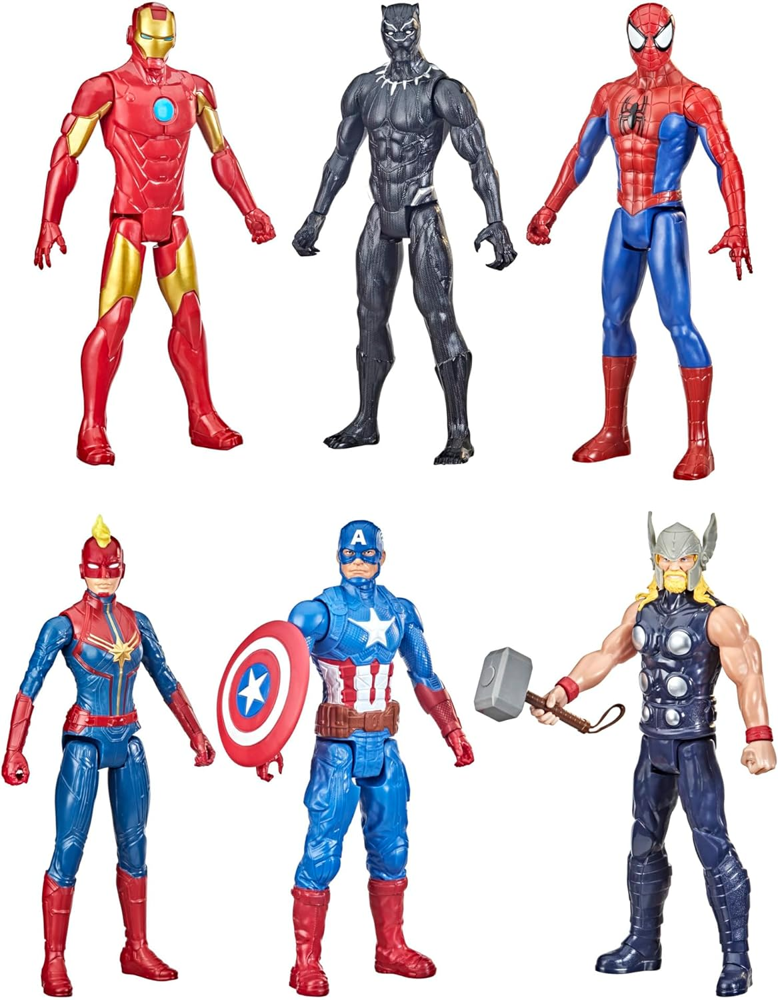
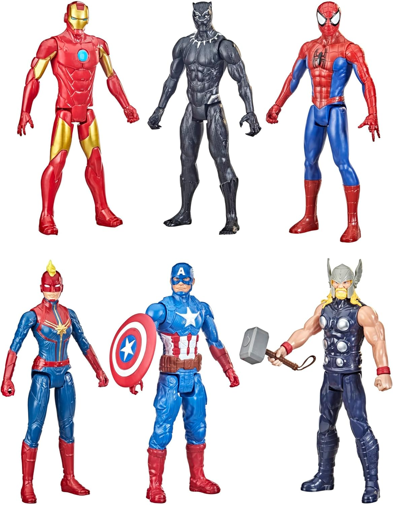

Las figuras de acción han sido una parte fundamental de la infancia de muchas generaciones, proporcionando no solo entretenimiento, sino también una herramienta poderosa para la imaginación y la creatividad. Desde los soldados de juguete hasta los superhéroes más icónicos, estas pequeñas representaciones han permitido a los niños y adultos dar vida a historias épicas y aventuras sin fin.
A lo largo de los años, las figuras de acción han evolucionado en términos de diseño y tecnología. Las primeras figuras eran sencillas, con pocos puntos de articulación y detalles mínimos. Sin embargo, hoy en día, gracias a los avances en la fabricación y el diseño, las figuras de acción cuentan con una asombrosa cantidad de detalles y articulaciones, permitiendo poses y configuraciones casi ilimitadas. Esta evolución no solo ha mejorado la experiencia de juego, sino que también ha elevado el estatus de estas figuras a piezas de colección muy valoradas.Además, las figuras de acción han trascendido su papel original de juguetes para convertirse en objetos de colección y arte. Para muchos, coleccionar figuras de acción es una pasión que va más allá del simple entretenimiento. Los coleccionistas dedican tiempo y recursos significativos a encontrar y adquirir piezas raras y exclusivas, y algunos incluso participan en comunidades y eventos dedicados a compartir y celebrar esta afición.